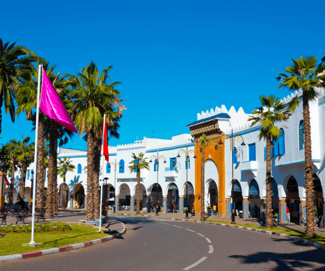

CSS basic
Exploring the Charms of Larache: A Hidden Gem in Northern Morocco
Introduction:
Nestled along the stunning coastline of Northern Morocco, Larache is a city with a rich history, vibrant culture, and captivating landscapes. This often-overlooked gem offers a unique blend of ancient architecture, modern amenities, and a laid-back atmosphere that makes it a must-visit destination for travelers seeking an authentic Moroccan experience.
Historical Significance:
Larache's history dates back centuries, with influences from various civilizations, including the Phoenicians, Romans, and Arabs. The city has served as a strategic port and witnessed the ebb and flow of different cultures, leaving behind a tapestry of historical sites. The Kasbah of Larache, a fortress overlooking the Atlantic, stands as a testament to the city's rich past and offers breathtaking views of the surrounding landscapes.
Architectural Marvels:
One of Larache's standout features is its architecture, which seamlessly blends traditional Moroccan design with European influences. Stroll through the Medina, where narrow winding streets lead to hidden gems, such as the Andalusian-style houses adorned with vibrant tiles and ornate ironwork. The Grand Mosque of Larache, with its intricate geometric patterns and towering minaret, is another architectural marvel worth exploring.
Conclusion:
Larache, with its blend of history, architecture, natural beauty, and culinary delights, offers a unique and rewarding travel experience. Whether you're a history enthusiast, a food lover, or simply seeking a tranquil coastal retreat, Larache has something to offer every traveler willing to explore its hidden charms.
tweets